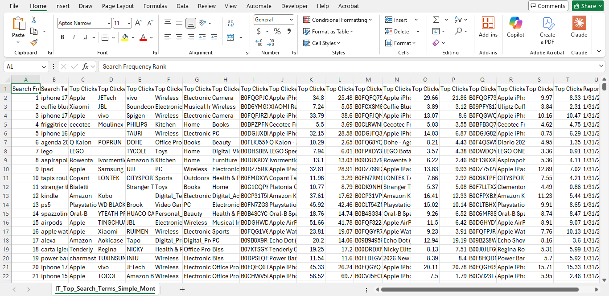
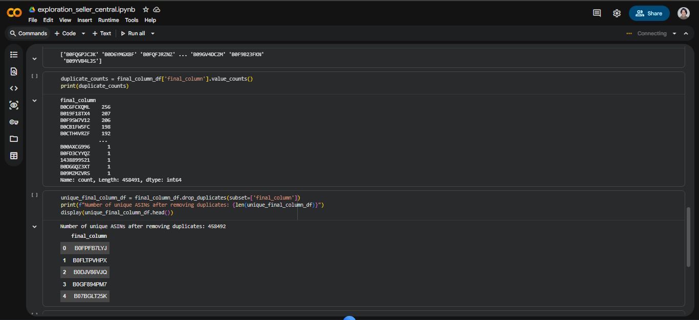

Overview
Two ways to research at scale
Downloading raw data directly from Seller Central and processing it with Python, and using Analyzer tools to analyze brands and identify wholesale opportunities.
Furthermore, SmartScout was also used to broaden the scope of the product leads.
Method 01 — Seller Central + Python
Downloading & processing Seller Central data
Top Search items presented through ASINS are not enough to identify products, as each should have its respective Amazon link and, if necessary, further calculation (if dealing across marketplaces).
01
Download data from Seller Central
ASINs downloaded from Amazon Seller Central.
02
Process the data with Python
Python scripts make the process more efficient relative to excel, as Python can handle thousands of data efficiently.
03
Analyse the final output
After preprocessing the data, it will then be uploaded to Analyzer Tools to gather additional information or columns such as Amazon links, profit, revenue, sales per month, etc.

📸Replace with screenshot-seller-central.png// Step 1 — Raw data export from Amazon Seller Central

📸Replace with screenshot-python-script.png// Step 2 — Python script processing and cleaning the raw dataset